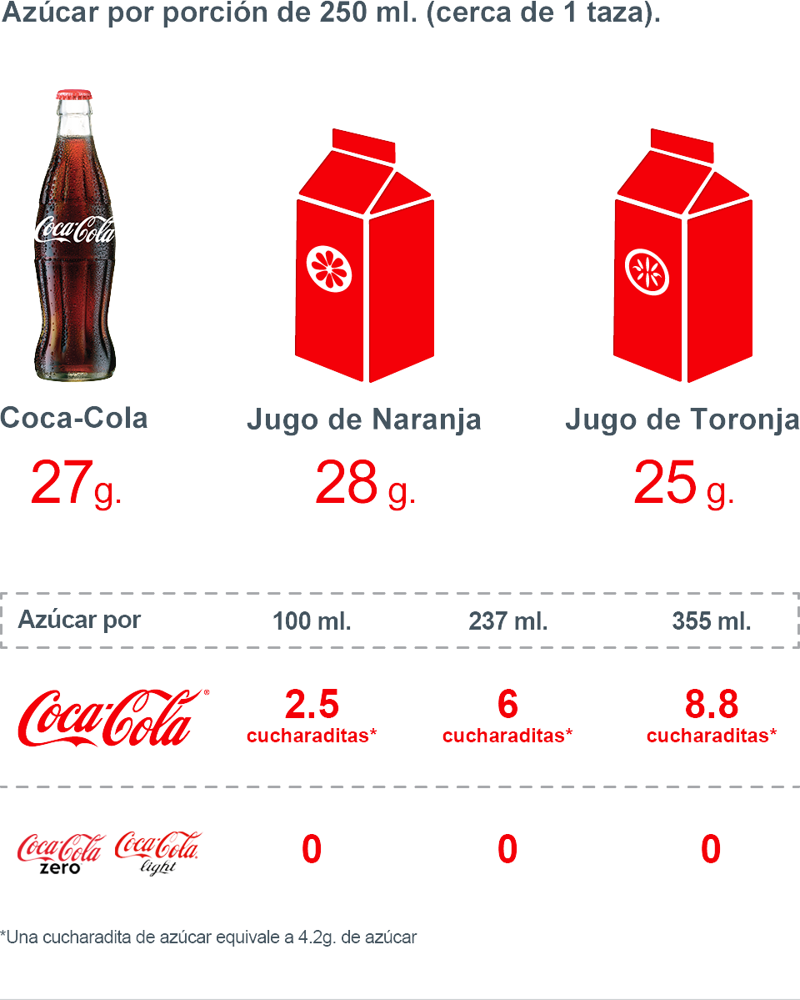

Todos los empaques de Coca-Cola y todas nuestras bebidas claramente indican la cantidad de azúcar que contienen como parte del etiquetado nutrimental.
Una porción de 250 ml (cercano de 1 taza) de Coca-Cola contiene 26 g de azúcar (sacarosa).
Una lata de 355 ml de Coca-Cola contiene 37 g de azúcar.